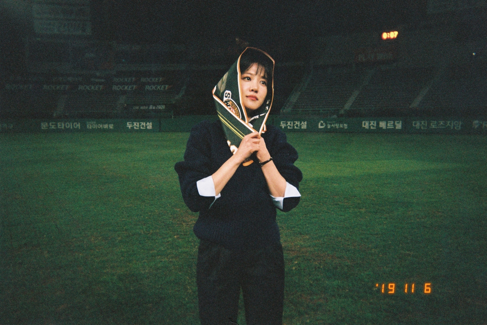

Hypertext Markup Language (HTML) is the standard markup language for creating web pages and web applications.
2009년 KBS 2TV 대하드라마 천추태후에서 어린 황보설 역으로 출연, MBC 창사48주년 특별기획드라마 선덕여왕에서 김춘추(유승호 분)의 아내 보량 역으로 출연하였다. 같은 해 옛날 옛적에 훠어이 훠이라는 연극에 아내 역으로 출연하였다.  옛날 옛적에 훠어이 훠이는 평안북도에 전해 내려오는 아기장수 설화를 바탕으로 과거 무자비한 권력 아래에서 억압당할 수 밖에 없었던 민중들의 삶 이야기를 각색해 희곡으로 만든 작품이다. 원작의 아내 역이 10대이긴 하지만, 아내의 역할 자체가 굉장히 복잡한 감정을 연기해야 하는 역할이라 이 작품에 어린 연기자가 도전한다는 것이 화제가 되었다.